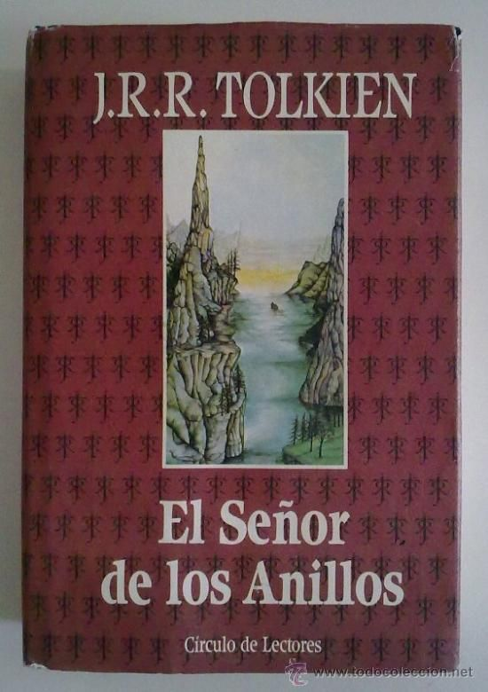
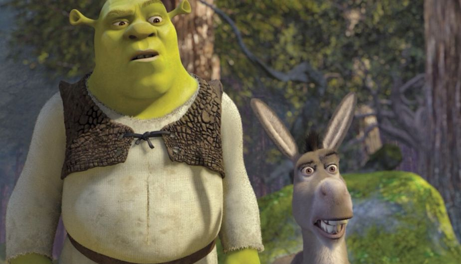

LITERATURA
Esto es una pequeña recopilación de libros sobre literatura, tanto de Fantasía, Poesía y Biografía.
LITERATURA FANTASTICA/ FANTASÍA
El Señor de los Anillos

Autor: J.R.R. TOLKIEN
Título: El señor de los anillos
Año de publicación: 1954
Edición Original En Inglés: George Russell Allen & Unwin
Lugar de Publicación: Reino Unido
Sinopsis: La novela narra el viaje del protagonista principal, Frodo Bolsón, hobbit de la Comarca, para destruir el Anillo Único y la consiguiente guerra que provocará el enemigo para recuperarlo, ya que es la principal fuente de poder de su creador, el Señor oscuro, Sauron. Este Libró es el que dara vida años más tarde a la famosa trilogía de "El Señor de los Anillos".
POESÍA
Platero y yo

Autor: Juan Ramón Jiménez
Título: Platero y yo
Año de publicación: 1914
Editorial: Ediciones de la Lectura
Lugar de Publicación:España
Sinopsis:El libro está constituido por breves estampas que entre sí no guardan un orden temático y responden a impresiones, sensaciones y recuerdos de Moguer en la etapa infantil de Juan Ramón Jiménez. Aparece como un diario en donde se detallan los aspectos más interesantes de la realidad, del pensamiento y del sentimiento del autor. Sin embargo, ni es un diario ni un libro autobiográfico, sino una selección de historias tomadas de un mismo ambiente real y escogidas entre los múltiples recuerdos del pasado.
BIOGRAFÍA
Steve Jobs (libro)
Autor: Walter Isaacson
Título: Steve Jobs
Año de publicación: 2011
Editorial: Simon & Schuster
Lugar de Publicación:Estados Unidos
Sinopsis:Steve Jobs es la biografía autorizada del empresario informático Steve Jobs.
Fue escrita a pedido del propio Jobs por el biógrafo estadounidense Walter Isaacson, antiguo ejecutivo de la CNN y Time Magazine que ya había escrito las populares biografías de Benjamin Franklin y Albert Einstein.
Se basa en más de cuarenta entrevistas realizadas a Jobs a lo largo de dos años, además de entrevistas a más de cien miembros de su familia, amigos, adversarios, competidores y colegas. Isaacson tuvo acceso "exclusivo y sin precedentes" a la vida de Jobs.3 Se dice que Jobs estimuló a los entrevistados a decir toda la verdad. Si bien Jobs cooperó con la elaboración del libro, no pidió tener ningún control sobre los contenidos (excepto la tapa), y renunció al derecho de leerlo antes de ser publicado.